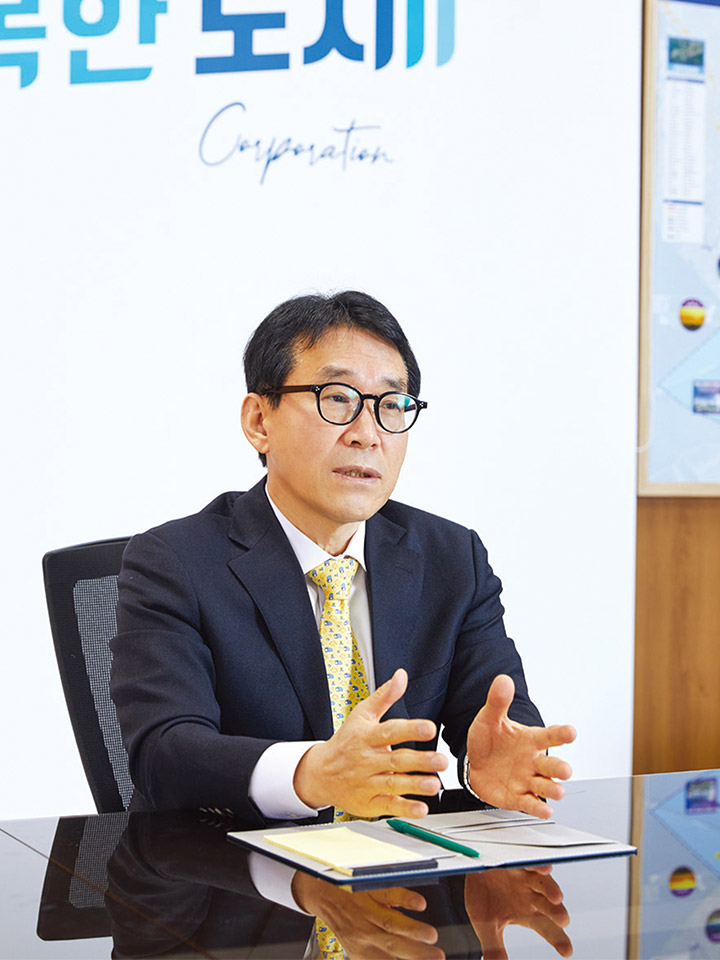

●
경기도도시공사협의회(이하 경도협) 회장으로 선출되셨습니다. 이에 임하는 각오나 포부가 있으시다면 한 말씀 부탁드립니다.
지방도시공사는 개발 이익을 관내로 환원하여 해당 지자체의 균형발전을 도모하는 중요한 역할을 하고 있습니다. 최근 도시공사로 전환·출범하는 기관이 늘고 있는데, 현재 경기도 내 31개 시군 중 23개의 시가 협의회 회원사로 있습니다.
갈수록 도시공사를 바라보는 시민들의 기대는 점차 높아지는 반면, 공사들이 현장에서 사업을 원활히 추진하는 데 있어 당면한 현실은 그리 녹록지 않습니다. 기초자치단체의 열악한 개발환경을 극복하고 지역 개발의 공공성 강화를 위해서는 중앙정부의 각종 규제 극복과 원활한 재원 조달, 조직의 체질 개선, 전문성 강화 등 현안들을 하나씩 해결해나가야 합니다.
지방도시공사가 당면한 문제들은 지방도시공사만의 문제가 아니며, 지방도시공사 홀로 해결할 수 없습니다. 회장사로 있는 동안 경도협 회원사와 함께 공론화 과정을 거쳐 공동과제를 상정하고, 다양한 방법으로 해법을 마련하는 데 주안점을 두고 임하겠습니다.
●
경도협의 주요 역할은 무엇인가요.
경도협은 경기도 기초자치단체가 출자한 도시공사들이 도시의 체계적인 발전방안 강구와 상호 간의 협력을 목적으로 만들어진 협의체입니다. 설립 초기에는 정례회를 통해 기관 간의 정보교류에 중점을 두었고, 최근에 이르러서는 사업 추진 시에 필요한 정책 제안사항을 발굴하고 개발 실무의 역량 강화를 위해 맞춤형 위탁교육을 실시하는 등 다양한 활동을 이어왔습니다. 앞으로도 우리 협의회를 통해 지방도시공사가 처한 어려움을 해소할 수 있는 길을 모색하고, 이를 위해 관련 기관과의 협력체계를 강화하고자 합니다.
●
지방도시공사의 현재 대내·외적인 이슈는 무엇인지 궁금합니다.
지방도시공사의 개발자치권을 확보하기 위해서는 현 제도의 개선과 규제 완화가 필요합니다. 자금조달에서 보수적으로 적용되는 운영기준이나 부채비율에 대한 규제 등은 지방도시공사의 역할과 기능을 강화하는 데 어려움이 있습니다. 이를 해결하기 위해서는 중앙정부와 정부 공기업의 이해와 적극적인 도움이 필요합니다. 지방도시공사의 역할이 확대되어야 정부의 주택공급계획이나 주민 삶의 질의 개선을 위한 서비스가 향상될 수 있습니다.
또한 지방도시공사가 도시개발사업에 적극적으로 참여하기 위해서는 공모사업의 운영 가이드라인이 마련되어 투명성과 공공성을 강화해야 합니다. 기초도시공사는 개발사업의 이익을 지역의 균형발전을 위해 구도심에 재투자하는 것이 중요한 책무입니다. 재정이 열악한 지방도시공사가 지역의 투자 자원을 지속적으로 확보하기 위해서는 민간과의 투명하고 공정한 협력체계를 구축해야 합니다. 공공성 확보에 대한 관련 법령의 구체적이고 조속한 입법을 통해 지방도시공사가 개발에 참여할 명분을 주어야 합니다.
마지막으로 지방도시공사의 협력체계를 구축하여 업무 역량과 대외 협상력을 강화해야 합니다. 일반적으로 기초도시공사는 LH나 광역도시공사에 비해 자금 규모나 조직 전문성이 부족합니다. 지금보다 사업영역을 확장하고 지역의 수요를 충족하기 위해서는 지방도시공사 간의 협약을 통한 공동사업 추진, 적극적인 상호교류를 통한 기관별 업무 역량 강화, 대외적 협력 체계를 마련하여 경쟁력을 높이는 데 힘써야 할 것입니다.

●
경도협에서 앞으로 추진하고자 하는 방향과 계획은 어떤 것입니까.
앞서 말씀드린 지방도시공사의 대내외적 쟁점 사항에 대한 제도 개선을 위해 지속적으로 노력할 것입니다. 기관별 현안은 격월마다 개최하는 정례회에서 논의하고, 주요 안건은 행정안전부, 경기도, 지방공기업평가원 등에 의견을 적극적으로 개진하려고 합니다.
경도협 회원사의 공통적인 이슈 사항에 대한 문제해결에 초점을 맞추고, 타당성 확보 차원에서 필요한 경우 관련 분야 학회, 전문가를 통한 학술연구, 정책 포럼 개최도 고려하고 있습니다. 지방도시공사의 지속가능한 발전을 위해서는 전문가분들의 심도 있는 담론을 통해 일관된 추진 방향을 설정하는 것이 중요합니다.
향후 변화될 도시개발 환경에 대비해 기초도시공사로서 역할 재정립과 혁신을 위한 준비가 필요한 시점입니다. 조직 전문성과 역량 제고를 위해서 지방도시공사의 네트워크 강화, 맞춤형 실무자 교육, 실무자협의회 운영 등 사장단뿐만 아니라 실무자에게 필요한 정보 공유의 장도 마련하겠습니다.
●
지방도시공사의 역할 확대와 사회적 책임을 다하기 위해 정부, 공기업, 지방공사 간의 협력체계 강화의 필요성을 말씀하셨는데요. 이와 관련하여 임기 기간 내에 꼭 해결하고자 하는 과제가 있다면 무엇인가요.
2021년 정부의 LH 혁신방안이 발표된 이후 지역 내 개발업무를 담당하게 될 지방도시공사의 역할이 커질 것으로 전망했습니다. 지역주민들도 공공개발 이익의 지역 내 환원과 재정수입 확충에 대한 목소리를 높이고 있습니다. 하지만 현실은 각종 규제에 막혀 주도적인 역할을 수행하는 데 한계에 부딪힐 수밖에 없습니다.
현재 당면해 있는 어려움 중 하나로 도시공사가 3기 신도시 개발에 참여하는 데 있어 지자체와 지방도시공사의 여건을 무시한 채 LH 주도로 추진되고 있다는 점입니다. 예를 들어, 임대주택 건립 비율의 분배와 지분에 따른 자금운용계획 등이 재정이 열악한 지방공사에는 진입장벽으로 작용하고 있습니다. 협약내용에 대한 조정안은 시급한 개선사항 중 하나일 뿐 지방도시공사의 역할을 강화하기 위해서는 정부와 LH, 광역도시공사 등의 이해를 바탕으로 한 협조가 전제되어야 합니다.
임기 내에 다양한 이해관계자와 함께 논의할 수 있는 담론의 장을 마련하여 지방도시공사가 지역 내 개발사업에 대한 역할을 적극적으로 분담할 수 있도록 제도 개선을 위한 발판을 마련하는 데 주력할 예정입니다.

시흥 월곶역세권 도시개발사업 조감도
●
정부의 주택공급과 관련된 정책에 따라 경도협 회원사가 3기 신도시 주택사업을 추진하면서 발생하는 어려움이나 애로사항이 있다면 무엇인가요.
현재 3기 신도시 주택사업 추진과 관련된 지자체는 시흥을 비롯하여 광명, 화성, 의왕, 군포 등이 있는데, 신정부 출범과 함께 대규모 주택공급 공약에 맞추어 가려면 신도시 개발에 참여하게 되는 지자체는 더욱 늘어날 것입니다. 지난 2월에 개최됐던 경도협 정례회에서도 3기 신도시 주택사업 참여와 관련하여 회원사들과 열띤 논의를 진행했습니다.
LH, GH, 지방도시공사가 체결하는 공공주택지구 공동사업 시행의 기본 협약에는 ‘장기공공임대주택 건설은 사업 지분율에 따라 사업시행자별로 각각 이행해야 한다’라고 명시되어 있습니다. 이 협약대로라면 건설 후 임대주택에 대한 관리도 해당 사업시행자가 지분에 참여한 비율만큼 담당해야 하는데, 기초자치단체 산하 지방도시공사의 재무 상황으로는 이행하기 힘든 조건입니다. 단순하게 사업 지분율에 따라 임대주택 공급을 이행할 경우 임대주택 관리를 위한 전담 조직 구성, 주택당 발생하는 관리·수선 비용에 따른 사업성 저하는 운영에 따른 부담을 가중시켜 열악한 환경에 있는 지방도시공사를 더욱 부실하게 만들 것입니다.
더욱이 공공임대 사업은 어느 조직에나 자본 대비 부채비율을 늘리는 결과를 낳습니다. LH나 GH에 비해 열악한 재무구조를 가진 지방도시공사의 경우에는 몇 호의 임대주택만으로도 부채비율이 크게 높아질 것입니다. 높은 부채비율은 공사채 발행을 제한시키고, 이는 신규사업 추진에 필요한 재원 확보가 어려워져 지방도시공사의 역할을 오히려 축소하게 되는 것입니다.
LH나 GH에 비해 지방도시공사의 여건이 자본금과 인력 규모, 경험, 조직역량 등 모든 면에서 어려운데도 동일한 조건으로 지분참여 비율만 놓고 사업을 시행한다는 것은 불합리하다는 의견이 지배적입니다. LH와 지방도시공사가 서로 상생할 수 있는 협약내용으로 유연하게 개정하여 지방도시공사로서의 역할을 명확히 하는 것이 필요합니다. 지방도시공사가 적극적으로 참여할 수 있는 틀이 마련되어야 LH 주도의 일방적인 주택 공급방식이 아닌 지역 중심의 공영개발이 활성화될 수 있을 것입니다.
숫자로 보는 시흥도시공사
9개
혁신적인 아이디어를 바탕으로 등록한 기관 특허 현황
10개
경영 및 시설관리 우수기관 공식 인증 현황
33회
공공구매 촉진대회 대통령 표창 등 높은 경영성과에 대한 수상 실적
5,571천 명
시흥도시공사 운영시설 및 프로그램 이용고객 수 (2021년 연간 기준)
●
포스트 코로나 시대에 바람직한 도시개발은 어떤 것이며, 앞으로 어떤 방향으로 나아가야 할까요.
코로나19로 인한 큰 변화는 도시환경 측면에서도 재택근무의 확대, 유동인구의 감소, 온라인 쇼핑과 배달문화 증가, 서비스업의 매출 감소 등의 변화를 고려하지 않을 수 없습니다. 우리 공사 역시 이러한 변화를 반영하여 ‘시흥 월곶역세권 도시개발사업’에 대한 토지이용계획을 변경하여 추진하고 있습니다. 먼저 기존에 계획했던 상업용지를 주거와 복합용지로 변경하고 공원의 녹지공간을 확보하여 해당 지역의 기반시설을 확충하고자 했습니다. 비대면 소비의 증가로 상업용지에 대한 수요가 감소하였고, 월곶역세권이 배후주거지역으로 조성된다면 구시가지에 있는 인근 상가의 지역경제 활성화를 기대해볼 수 있기 때문입니다.
또한 코로나19 이후 집에 있는 시간이 늘어난 점을 고려하여 1인당 주거면적을 이전보다 높인 점도 마찬가지입니다. 물론 재택근무 증가로 직주근접에 대한 선호도는 다소 줄어들 수 있겠지만 도심에 인접한 주거에 대한 선호도는 지속될 것이기에 수인선, 월판선, 영동고속도로 등 접근성이 우수한 입지 여건을 고려한 월곶역세권만의 차별화된 복합고밀 개발계획으로 진행 중입니다.
●
시흥시시설관리공단에서 시흥도시공사로 전환·출범한 지 만 2년이 지났는데요. 지난 2년간의 성과는 무엇인가요.
우선 공사로 전환 후 조직 진단과 정비를 통해 임직원의 역량을 강화하는 등 조직에 대한 내실화를 다져왔습니다. 그 결과 비교적 빠르면서도 안정적으로 개발사업을 추진할 수 있었습니다. 월곶역세권 도시개발사업, 장현 B10BL 공공주택사업, 은계어울림센터 건립 등을 차질 없이 진행해오면서 가시적인 성과를 거두고 있습니다. 작년에는 3회의 정책토론회를 통해 시흥 바이오메디컬 시티, 시흥역세권 개발, 시흥 스마트시티를 주제로 전문가분들과 시흥의 미래를 그려보기도 했습니다.
공사의 수익사업 다각화를 위해서 공사가 참여하는 신규 개발사업에 민간 제안 공모를 추진하여 쟁쟁한 공기업들을 제치고 e-대한경제 주관 지방혁신대상을 수상했습니다. 또한 바이오메디컬 시티 개발 구상, 시흥 미래형 첨단 자동차 클러스터(V-City) 개발사업 등 미래 시흥의 성장동력 확보를 위해 도전적으로 도시개발 사업을 준비하고 있습니다.
개발사업 외에도 적극행정과 ESG경영, 사회적가치 창출 등 다양한 활동에서 눈에 띄는 성과를 이루었습니다. 혁신적인 아이디어로 전국 최초로 공영주차장 바로패스 주차 플랫폼 서비스를 추진하여 업무 효율성을 높였을 뿐만 아니라 친환경 경영실적을 인정받아 환경부 장관상을 수상했습니다. 또 공공구매 촉진대회 국무총리 표창 수상, 공정채용 우수사례 경진대회 장관 표창 수상 등 사회적 책임을 이행하려는 노력을 높게 평가받아 기쁘게 생각합니다.
●
최근 미래비전으로 제시한 ‘시흥도시공사 어젠다 22’를 비롯, 향후 계획은 무엇인가요.
시흥시는 신구 도심 간의 격차를 줄이는 도시 균형발전이 주요한 지역입니다. 구도심 인구 유출, 상권 쇠퇴 등을 방지하기 위해 ‘2035 시흥시 중장기 균형발전계획’을 수립하고 있으며, 도시 정비를 통한 구도심 리모델링과 생활 SOC사업, 도시재생 뉴딜사업 등을 통해 균형발전을 꾀하고 있습니다. 시흥도시공사를 통한 개발 이익의 지역 환원이 구도심 기반시설 구축 등에 투입되어 신·구도심 간의 격차를 좁히는 데 기여하겠습니다.
무엇보다 우리 공사의 중장기적인 변화와 혁신, 시흥의 주요 지역 현안에 대한 비전 제시를 담은 「어젠다 22」는 ▲新 철도중심도시 10만 호 주택공급 ▲K-골든코스트를 품은 미래형 친수도시 ▲구도심 재생을 통한 시흥시 균형발전 ▲지속가능한 발전 ‘S-ESG’ 경영 추구를 대표 의제로 제시했습니다. 이는 새로운 정부 및 시흥시의 정책 방향에 부합한 이슈를 제시하고, 남부권·북부권의 상생을 통한 시흥의 균형발전 전략 발굴, 도시브랜드 마케팅 추진전략 등을 22개 기본의제에 담았습니다.
다양한 이해관계자와 상생 파트너로서 협력관계를 견고히 하여 「어젠다 22」가 구체적인 효과와 성과를 나타낼 수 있도록 지속적으로 노력하겠습니다.
시흥도시공사
설립일 : 2019년 10월 11일(공단 설립일: 2004년 10월 1일)
대표자 : 정동선
직원 수 : 375명(2022. 2월 기준)
자본금 : 1,657억 원
주소 : 경기도 시흥시 시흥대로268번길 8(능곡동)
전화 : 031-488-6800
홈페이지 : www.shsi.or.kr
사업 : 개발사업, 환경사업, 교통사업, 문화·체육·레저 등
대표적인 수상 현황
• 2021 중소벤처기업부 공공구매 촉진대회 우수기관(국무총리 표창)
• 2021 행정안전부 공정채용·블라인드 채용 우수사례 경진대회(장관상)
• 2021 대한민국 지방자치 혁신대상 도시공사 부문(대상)
• 2021 중증장애인생산품 우선구매 우수기관(경기도지사)
• 2021 지방공기업 신속집행 우수기관(경기도지사)
• 2021 병무청 사회복무요원 복무관리 우수기관(병무청장)
• 2021 공공기관 정보공개 종합평가 지방공기업 최우수(4년 연속)
• 2021 공공기관 개인정보보호 관리수준진단 최고등급(5년 연속)
• 2022 행정안전부 ‘재해경감 우수기업’ 인증

정동선 경기도도시공사협의회 회장·시흥도시공사 사장
“향후 변화될 도시개발 환경에 대비해 기초도시공사로서 역할 재정립과 혁신을 위한 준비가 필요한 시점입니다. 지역 내 개발사업에 대한 역할을 적극적으로 분담할 수 있도록 제도 개선을 위한 발판을 마련하는 데 주력할 것입니다. 또한 조직 전문성과 역량 제고를 위해서 지방도시공사의 네트워크 강화, 맞춤형 실무자 교육, 실무자협의회 운영 등 사장단뿐만 아니라 실무자에게 필요한 정보 공유의 장도 마련하겠습니다.”